Open by Design
Rick Gilmore & Karen Adolph
2019-06-07 16:49:15

Preliminaries


Overview
- The hardest science
- Open by design
- Inspired by Brian
The hardest science
Psychology is the hardest science
(Harder than physics)

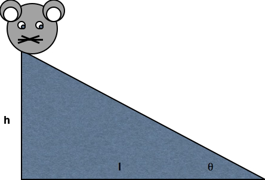
Why is it so hard?

- Body (\(B\)) within world (\(W\))
- Nervous system (\(N\)) within body (\(B\))
- Mind (\(M\)) within nervous system (\(N\))
\(\dot{M} = f_{M}(M,N)\)
\(\dot{N} = f_{N}(N,B)\)
\(\dot{B} = f_B(B,N,W)\)
\(\dot{W} = f_W(W,B)\)
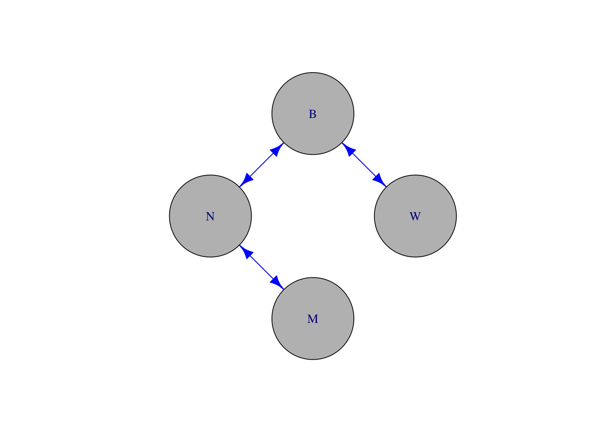

_-_Google_Art_Project.jpg#/media/File:Pieter_Bruegel_the_Elder_-_The_Tower_of_Babel_(Vienna)_-_Google_Art_Project.jpg)

What do to about it?
Follow a leader
Open by design
The language sciences are far ahead of many fields in addressing the problems required to understand language behavior
Theory is important…

Noam Chomsky
But data are fundamental
- Can children acquire language from the environment?
- Or do they require rich, prior, innate knowledge about the structure of language?
- What is the child’s language environment (\(W\))?
- How does \(W\) shape changes in behavior \(\dot{B}\)
- and by extension, the brain \(N\), and the mind \(M\)?
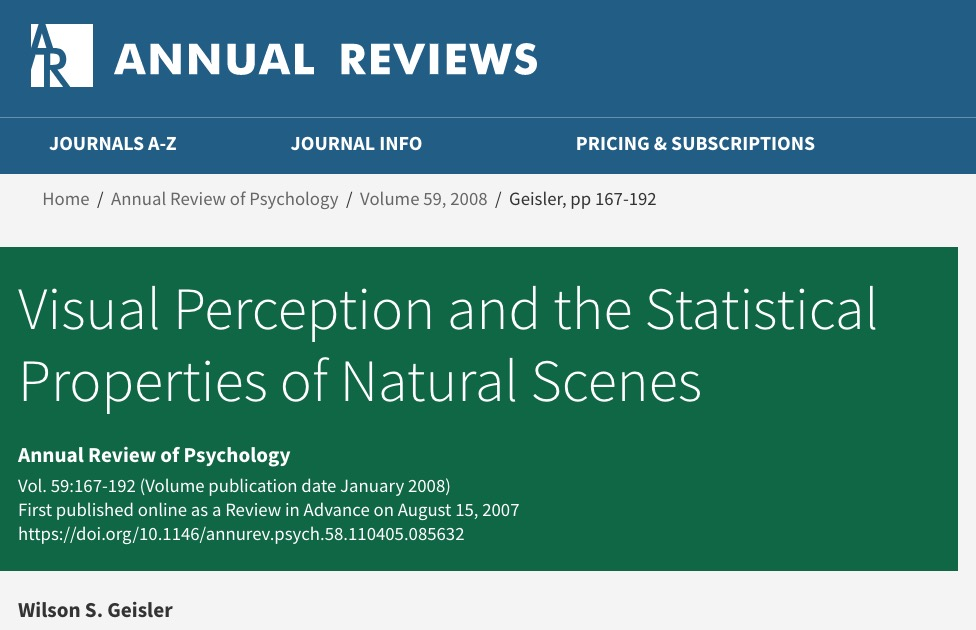
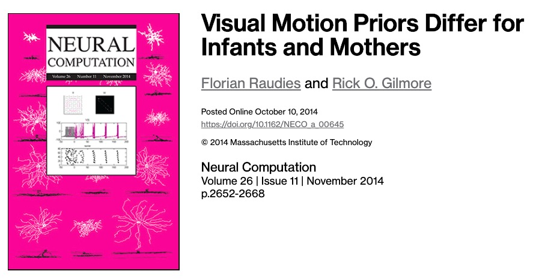
“One of the most fundamental questions in psychology concerns the role of experience. What are the essential components of human experience?”
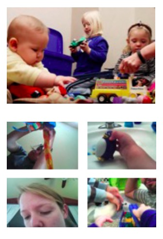
- 500+ hours of head camera video
- 91 infants (46 female, 45 male) 1-24 mos (US)
- 40 (24 female, 16 male) 1 to 15 (India)
Data must be openly shared
“Why would I share my data? No one else would want to see it.”
A random colleague
“It’s too much work to share.”
Another random colleague
“I don’t want someone to scoop me or do an analysis I plan to do someday.”
More random colleagues than you might imagine
“Principles of scientific integrity require that ideas be put to a test. In order to test your ideas about your data, you need to open them up to others who will either support or challenge your ideas.”
“Some types of claims can only be tested against large data sets or against comparisons of somewhat similar data sets. To make these analyses, we often need more and more data.”
“Much of the work in science is conducted using public funds. We have an obligation to the public to make maximally efficient use of these data.”

Russ Poldrack, founder of OpenNeuro, The Cognitive Atlas
“…the principles of human subject research require an analysis of both risks and benefits…”
“…such an analysis suggests that researchers may have a positive duty to share data in order to maximize the contribution that individual participants have made.”
Robert Merton


- universalism: scientific validity is independent of sociopolitical status/personal attributes of its participants
- communalism: common ownership of scientific goods (intellectual property)
- disinterestedness: scientific institutions benefit a common scientific enterprise, not specific individuals
- organized skepticism: claims should be exposed to critical scrutiny before being accepted

Walter Mischel

“…psychologists tend to treat other peoples’ theories like toothbrushes; no self-respecting individual wants to use anyone else’s.”
“The toothbrush culture undermines the building of a genuinely cumulative science, encouraging more parallel play and solo game playing, rather than building on each other’s directly relevant best work.”
Data must be organized and shared in common formats
12 @Date: 21-JAN-2003
13 *MOT: alright , sit over here .
14 %mor: co|alright cm|cm v|sit prep|over pro:dem|here .
15 %gra: 1|3|COM 2|1|LP 3|0|ROOT 4|3|JCT 5|4|POBJ 6|3|PUNCT
16 *MOT: sit near me and I'll help you build it .
17 %mor: v|sit prep|near pro:obj|me conj|and pro:sub|I~mod|will v|help
18 pro|you v|build pro|it .
19 %gra: 1|0|ROOT 2|1|JCT 3|2|POBJ 4|7|LINK 5|7|SUBJ 6|7|AUX 7|1|CJCT 8|9|SUBJ- extensions for CA, PhonBank, etc…
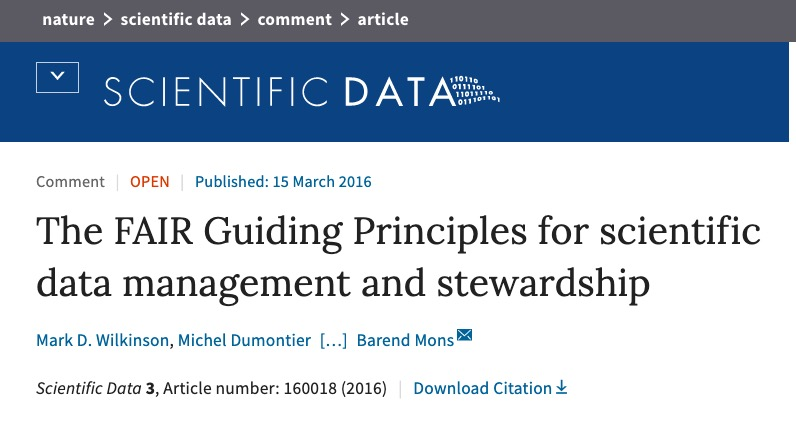
Data should be…
- Findable
- Accessible
- Interoperable
- Reusable
Blessed are the toolmakers
- tool-building is invaluable
- tool-building represents a high-impact contribution to scholarship
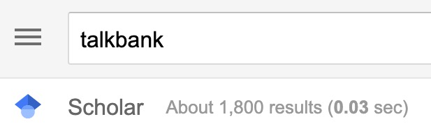
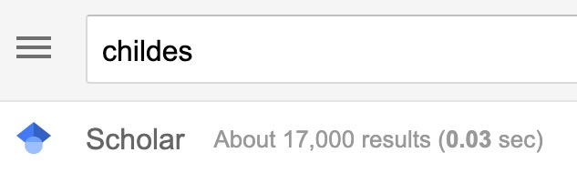
Data + tools can energize research communities
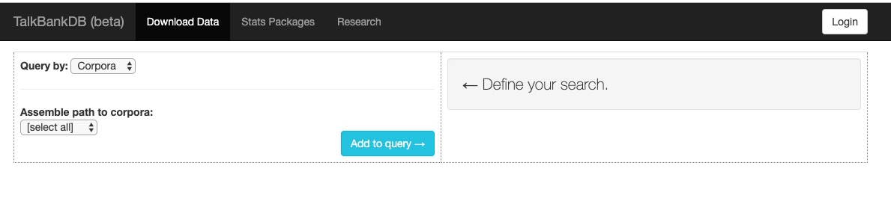
- child language
- aphasia, dementia, ASD, RHD, TBI
- bi/multilingualism
- phonology, syntax, semantics, behavior
- audio, video, transcripts
Behavior in its natural contexts and in its full complexity can be studied productively
Inspired by Brian
- Share video, audio, *.cha, *.csv, etc.
- Access restricted to institutionally authorized researchers
- Citation required, but not pre-approval of research questions
Video…
- Captures (& preserves)
- Shows (& helps tell…)
- Expands the scope of inquiry (e.g., words +)
- Provides unparalleled opportunities for reuse
databraryapi::read_csv_data_as_df() %>%
ggplot(.) +
aes(Auth_Investigators, Institutions) +
geom_point()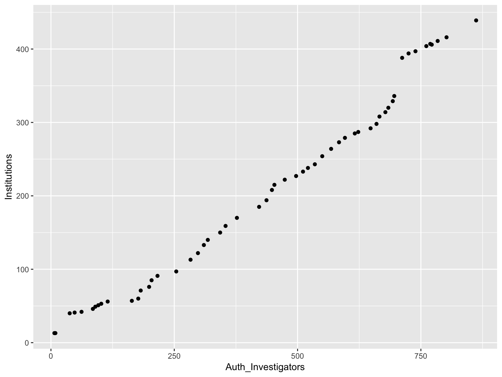
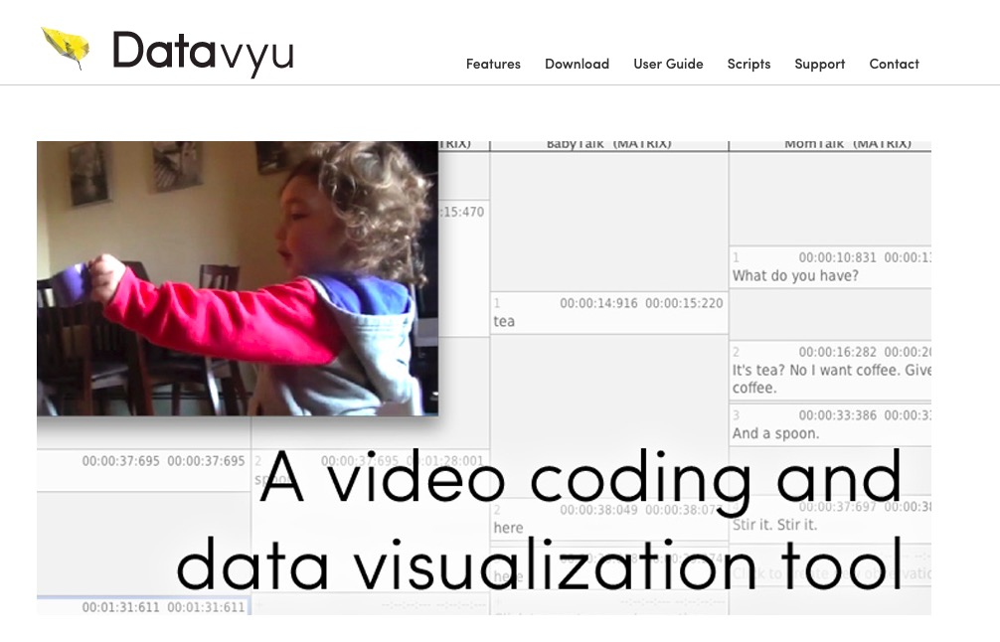
- scriptable
- optimized for efficient coding of ANY behavior
- convertible to/from CHAT
Play & Learning Across a Year (PLAY) project
- What do mothers and infants actually DO
- ~\(n=1,000\) infant/mother dyads, \(n=300\) 12-, 18-, and 24-month-olds
- Demographics, health status, media use, temperament
- Modified MB-CDI (interview, video-recorded, English/Spanish item-level equivalents)
- Open protocol, video documentation
Brian says:
- Ontologies are essential
Karen, Cathie, & Rick say:
- You’re right, Brian. (Of course)
- We just don’t know what they should be.
Why not BehaviorBank or WalkBank or …?
- Following your (collective) lead
- Putting all the pieces together
- Speech + gesture + emotion + locomotion + object interaction + …

…before it was cool


Thank you, Brian!
rogilmore@psu.edu https://gilmore-lab.github.io https://gilmore-lab.github.io/2019-06-MacWhinney-Symposium/databrary-workshop/tribute-to-brian/ @rogilmore
This talk was produced on 2019-06-07 in RStudio version using R Markdown and the reveal.JS framework. The code and materials used to generate the slides may be found at https://github.com/gilmore-lab/2019-06-MacWhinney-Symposium/tribute-to-brian/. Information about the R Session that produced the code is as follows:
## R version 3.5.2 (2018-12-20)
## Platform: x86_64-apple-darwin15.6.0 (64-bit)
## Running under: macOS Mojave 10.14.5
##
## Matrix products: default
## BLAS: /System/Library/Frameworks/Accelerate.framework/Versions/A/Frameworks/vecLib.framework/Versions/A/libBLAS.dylib
## LAPACK: /Library/Frameworks/R.framework/Versions/3.5/Resources/lib/libRlapack.dylib
##
## locale:
## [1] en_US.UTF-8/en_US.UTF-8/en_US.UTF-8/C/en_US.UTF-8/en_US.UTF-8
##
## attached base packages:
## [1] stats graphics grDevices utils datasets methods base
##
## other attached packages:
## [1] qrcode_0.1.1
##
## loaded via a namespace (and not attached):
## [1] Rcpp_1.0.1 codetools_0.2-15
## [3] revealjs_0.9 assertthat_0.2.1
## [5] digest_0.6.18 R.methodsS3_1.7.1
## [7] R6_2.4.0 magrittr_1.5
## [9] evaluate_0.13 httr_1.4.0
## [11] stringi_1.4.3 curl_3.3
## [13] R.oo_1.22.0 R.utils_2.8.0
## [15] keyring_1.1.0 databraryapi_0.1.6.9001
## [17] rmarkdown_1.12 tools_3.5.2
## [19] stringr_1.4.0 xfun_0.6
## [21] yaml_2.2.0 compiler_3.5.2
## [23] htmltools_0.3.6 knitr_1.22